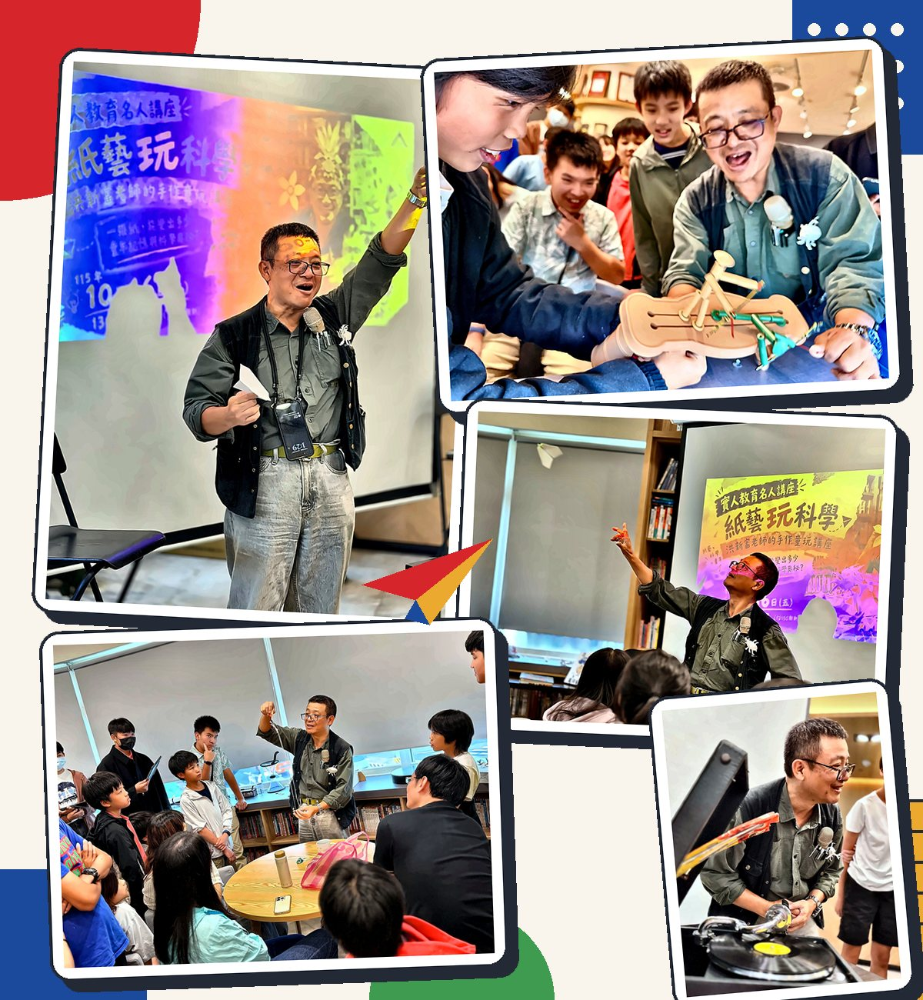
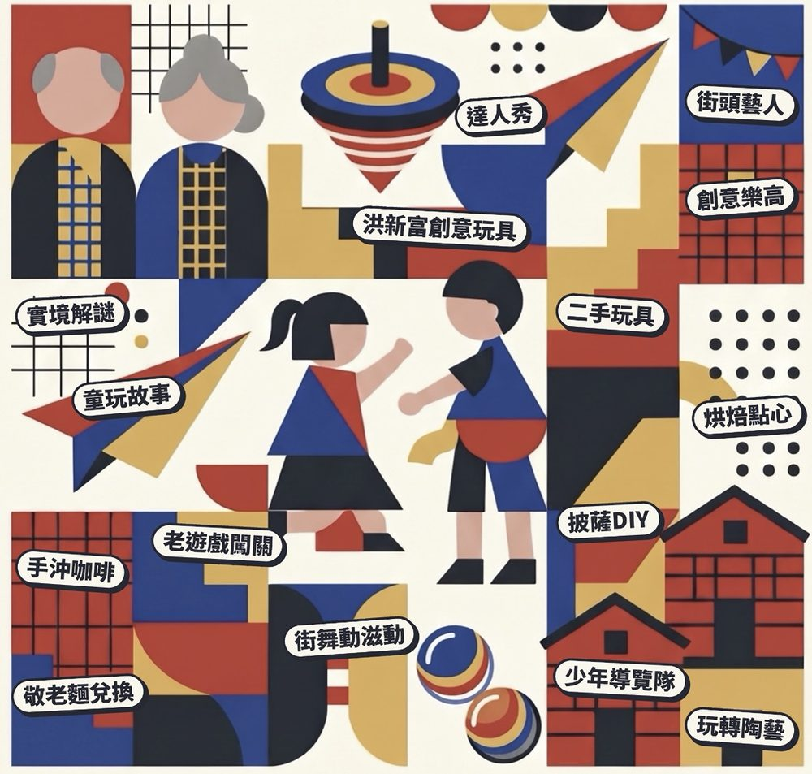
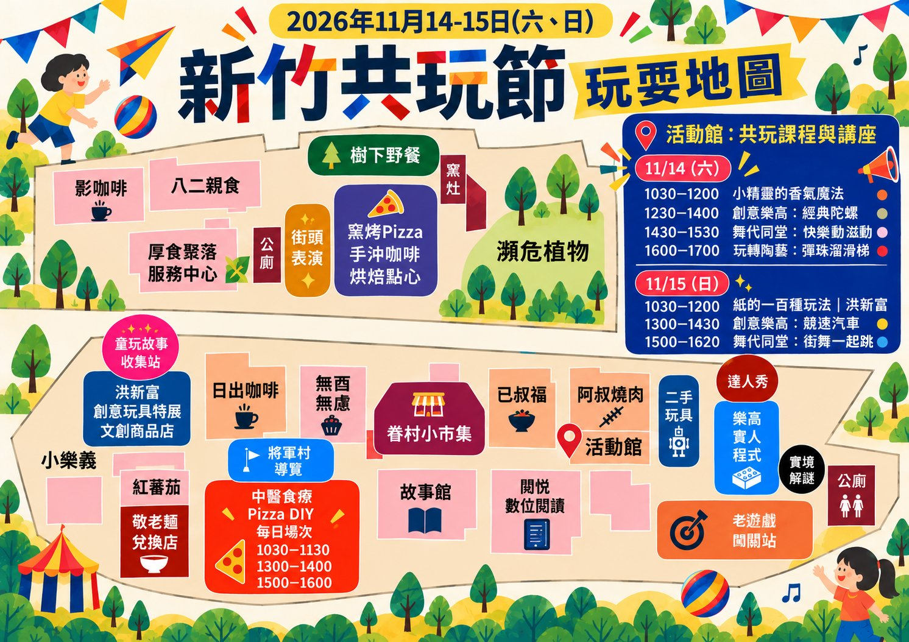
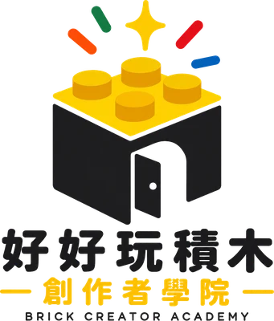
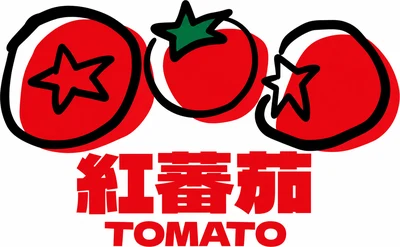

洪新富創意玩具特展
台灣紙藝大師洪新富的創意玩具世界，橡皮筋槍、紙藝機關、古早童玩——走進來就想動手玩。
2026 · HSINCHU PLAY FESTIVAL
老中青幼的跨世代遊樂園

新竹共玩節是一個跨世代的歡樂慶典。在將軍村這片充滿歷史記憶的空間裡，讓阿公阿嬤、爸爸媽媽、孩子們找到屬於自己的玩法。 兩天的活動，有展覽、有表演、有課程、有特別任務，隨時來、自由逛，帶著全家人一起度過充實的週末。

台灣紙藝大師洪新富的創意玩具世界，橡皮筋槍、紙藝機關、古早童玩——走進來就想動手玩。
花切、劍玉、魔術、溜溜球、雜耍球——看達人現場耍，隨時可體驗。
吃石頭、打瓶蓋……古早玩法通通在這，隨時可以上場玩。
項目公告中
學生樂高作品就地展示，旁邊有人可以聊、可以問。對樂高工作坊有興趣的，現場直接報名。
學生用 AI 做的作品和工具，在這裡直接向你展示和說明。你不一定懂 AI，但你會看懂他們想做什麼。
什麼樣的教育，讓孩子願意主動學？現場有學生分享，也歡迎有興趣的家長來聊聊，聽聽孩子們自己怎麼說。
品項持續更新，現場可以試玩再決定。好玩的玩具不用塵封在家，在這裡找到下一個主人。
百年老樹下的戶外展演空間，不定時有精彩演出，隨時留意現場公告。
在地職人、手作選品、特色小攤。
攤位持續加入中，敬請期待
窯灶旁
手沖咖啡、窯烤披薩、手作甜點，在老眷村的氛圍裡慢慢吃。
11 月 15 日（日），A 棟舞台全天熱鬧登場！街頭表演帶來精彩節目，不用預約、隨時入座，坐下來欣賞，還可以邊吃邊看。
表演節目陸續公告中
柴米油鹽樸食趣・當中醫食療遇上西式比薩
透過神祕食材卡認識中醫食療觀念，親手選食材、做比薩、窯烤現吃。1 大人＋1 小孩一起挑戰，每組可做 2 片六吋比薩。
香氣魔法工作坊・小草老師
用植物的香氣，認識自然、認識自己。小草老師帶著孩子進入神奇的香草世界，動手製作專屬香氣小物，帶回家的不只是作品，還有一段美好的感官記憶。
Day 1 · Lulu 老師
用樂高積木，重現老遊戲的精神！帶領孩子設計並組裝自己的陀螺，讓傳統玩具升級成創意作品。
Day 2 · Lulu 老師
設計你的賽車，然後讓它跑起來！孩子們動手組裝、測試、調整，在玩中學習工程思維。
山姆老師與街舞隊・律動課
跟著音樂一起開心律動！用音樂帶動身體節奏，大人小孩跟著節拍一起動起來。小學以上都可以來，不需要任何舞蹈基礎！
山姆老師與街舞隊・街舞體驗
用簡單的動作體驗街舞的樂趣！跟著音樂學幾個帥氣的街舞動作，一起跳出節奏感。小學以上都可以來，不需要任何舞蹈基礎！
圭窯新采燒
用雙手捏出一條彈珠溜滑梯！老師帶你從零開始，體驗陶土的溫度與可能。幼稚園小朋友需大人陪同（大人免費），小學以上可以自己來挑戰。
「玩童」洪新富老師親自現身
從紙的基礎到神奇的變化，帶你看見紙藝的創作思維。喜歡紙藝、喜歡創意的你千萬不要錯過。
帶著家裡的長輩來，在童玩故事收集站錄下一段屬於他們的記憶——一個地方、一件往事、一個味道都可以。錄完故事，就能獲得兌換券，換一碗熱騰騰的敬老麵。
碗數有限，換完為止
跟著孩子探索將軍村
金車公益競賽首獎團隊，在這裡等著帶你走！帶領你探索將軍村的歷史、文化與美食，用孩子的眼光重新認識這片老地方。
場次與集合地點請留意現場公告
認識少年導覽隊 →找到活動現場的各路達人，完成五個達人挑戰就有驚喜！
達人們在哪裡？現場自己找！
成功挑戰三種老遊戲並全數成功，就能獲得歡樂驚喜！
看似簡單，其實大有學問
在將軍村裡破解一道道謎題，探索眷村的隱藏故事。喜歡程式、喜歡解謎的你，一定要來試試。
場次與報名方式即將公告
展覽區、市集、美食與闖關任務兩天 10:00–17:00 全天開放，以下是有固定時間的課程與表演。
10:30–12:00｜活動館｜$200／親子組
10:30–11:30｜柴米廚房｜$399／組
12:30–14:00｜活動館｜$200／人｜5–11 歲
13:00–14:00｜柴米廚房｜$399／組
14:30–15:30｜活動館｜免費
15:00–16:00｜柴米廚房｜$399／組
16:00–17:00｜活動館｜$390／人
A棟舞台｜免費・隨時入座
10:30–12:00｜活動館｜免費
10:30–11:30｜柴米廚房｜$399／組
13:00–14:30｜活動館｜$300／人｜5–11 歲
13:00–14:00｜柴米廚房｜$399／組
15:00–16:20｜活動館｜免費
15:00–16:00｜柴米廚房｜$399／組
展覽、美食、課程、闖關站都在這張圖上。活動當天打開手機，跟著地圖一路玩！


